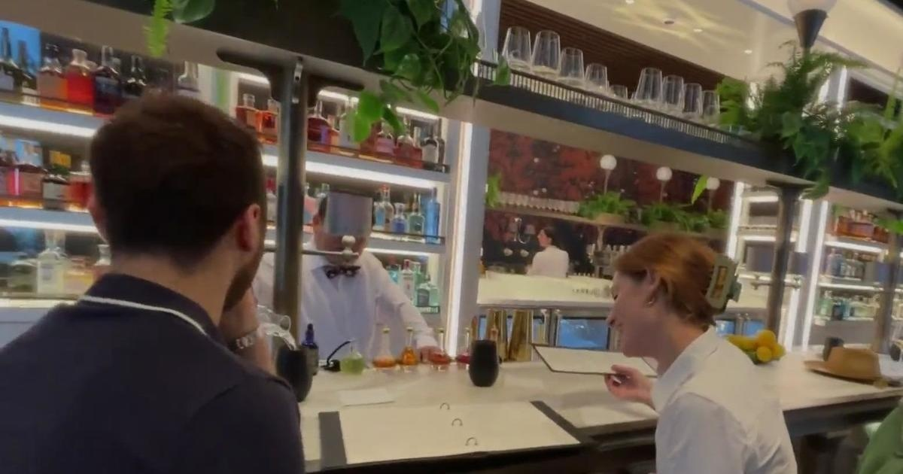

New restaurant and bar in San Francisco's Financial District looks to show off the best of the citySAN FRANCISCO — San Francisco faces a number of challenges that include homelessness and crime, but one city native is trying to show another narrative through a new restaurant and bar he just opened in the Financial District called The Holbrook House. Owner Phillip Spiegel held the ribbon cutting for the new business on Wednesday morning. It's a unique space in a 42-story building located at One Sansome. The interior design was done with a purpose. The bar is the centerpiece of the restaurant. "We want there to be an old school feel, but we want there to be a modern flair just like our city," Spiegel said. It's extravagant, but there's variety on the menu, from caviar and martinis to fries and a Modelo. But one of the most intriguing parts involves a switch. Six of the booths have two switches: one labeled martini and the other labeled champagne. Once a customer lifts the switch up, it turns on a light. "That signals our staff, 'Hey someone get over there because it's martini time,'" Spiegel explained. Spiegel added that San Francisco has been good to him, and he wants to show that side. "As a native San Franciscan, you see and read there's a little bit of fatigue of how bad everything is, and I walk in and I don't see how bad everything is. I see a lot of fun, and I see a lot of energy," Spiegel said. Wednesday was a soft launch that mostly included friends and family at the restaurant. "Even though we're indoors, it feels indoor and outdoor with the conservatory space," said Jake Wall who was dining in. Spiegel said the Holbrook House will be open early in the morning starting at 7:30 a.m. for people who want to get their coffee and take it to their office. It will also be open for breakfast and lunch. Then, in the evening, they will have small plates and drinks until midnight. "We built it like a private club, but there's no membership. The membership is if you know you know. If you want to be a part of it, come in and be a part of it," Spiegel said. for more features. |
 |